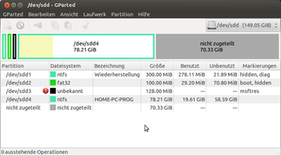
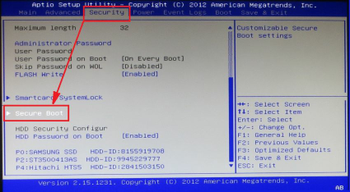
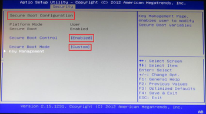
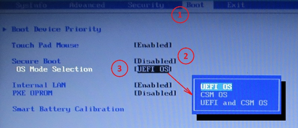
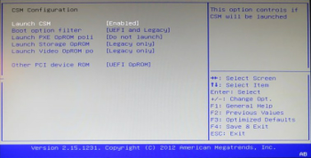
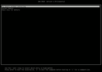
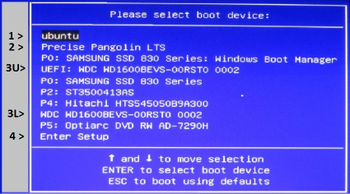

EFI Grundlagen
Achtung!
Die Installation von Ubuntu im EFI-Modus erfordert ein 64Bit System, sowohl hardwareseitig als auch von der Software her! Beim Herunterladen der ISO-Datei ist zu beachten, dass die Kennung *-amd64.iso lautet:
Dieser Artikel wurde für die folgenden Ubuntu-Versionen getestet:
Ubuntu 16.04 Xenial Xerus
Ubuntu 14.04 Trusty Tahr
Seit mehreren Jahren kommen zunehmend Computer-Systeme auf den Markt, die mit einem (U)EFI in der Mainboards-Firmware ausgestattet sind statt der lange Zeit genutzten BIOS-Firmware.
Dieser Artikel beschreibt die Grundlagen, die für das Installieren und Betreiben eines Rechners mit einem (U)EFI wichtig sind - angepasst an Ubuntu und deren Derivate. Hinweise auf das meistens bereits vorhandene Betriebssystem Windows werden, soweit dieses zum Verständnis notwendig ist, gleichfalls angesprochen.
Hinweise und Erläuterungen¶
UEFI¶
Die Informationen zur Historie, Aufbau und Wirkungsweise sind dem externen Artikel (U)EFI (Unified Extensible Firmware Interface) zu entnehmen.
In diesem Artikel werden die dazu passenden Informationen aufbereitet, die die Verbindung in das Betriebssystem Ubuntu  herstellen und verständlich machen sollen.
herstellen und verständlich machen sollen.
(U)EFI macht es insbesondere möglich, mehrere Betriebssyteme total unabhängig voneinander zu installieren und zu betreiben. Das bisher übliche "entweder" / "oder", wer auf dem Computer-System "das Sagen" hat (Bootloader) und wer im Notfall wen und wie beeinflusst, entfällt dabei. Auch ein nachträgliches Deinstallieren von Ubuntu oder auch Windows ist damit problemlos möglich.
Eine Gemeinsamkeit besteht allerdings noch - die EFI-Partition mit ihren Bootverzeichnissen - aber da kann man sich sicher schon einig werden.
Partitionstabelle¶
Ein wesentliches Kriterium für die Installation auf einem (U)EFI-Mainboard ist die Formatierung der beteiligten Datenträger (Festplatten, SSD) und der vorhandene Speicherplatz auf diesen Datenträgern.
Die bisher überwiegend verwendete Technik der Formatierung:
Master-Partitionstabelle (MPT) - auch "msdos-Format" bezeichnet
erweiterte Information -> Partitionstabelle
wurde aus mehreren Gründen ersetzt durch eine Formatierung mit einer
GUID-Partitionstabelle (GPT)
erweiterte Information -> GUID-Partitions-Tabelle
Weitergehende Informationen zur Verwendung unter Ubuntu sind auch den GRUB_2 Grundlagen zu entnehmen.
Vorgaben seitens Windows¶
Hat man auf dem UEFI-Rechner bereits eine Windows-Installation, so stellt sich das in der Regel wie folgt dar (links im Terminal, rechts mit GParted):
|  |
| Windows-Installation im EFI-Modus |
sudo parted -l
Modell: ATA SAMSUNG SSD 830 (scsi) Festplatte /dev/sda: 128GB Sektorgröße (logisch/physisch): 512B/512B Partitionstabelle: gpt Nummer Anfang Ende Größe Dateisystem Name Flags 1 1049kB 316MB 315MB ntfs Wiederherstellung versteckt, diag 2 316MB 420MB 105MB fat32 EFI system partition boot, versteckt 3 420MB 555MB 134MB Microsoft reserved partition msftres 4 555MB 84,5GB 84,0GB ntfs Basic data partition
Die hier mit lfd. #3 ausgewiesene Partition erscheint als nicht formatiert - aber diese Partition entspricht der Partition
system-reserviert
bei der Installation im BIOS-Modus. Diese Partition darf nicht gelöscht oder anderweitig benutzt werden - Windows verwendet diesen Bereich im EFI-Modus für interne Zwecke.
Das Setup aufrufen¶
Um sich mit den Möglichkeiten der Firmware und dem Setup vertraut zu machen, muss man erst einmal dort hinein kommen. Und hier machen es einem die Hersteller durch unterschiedlichste Maßnahmen nicht immer leicht. Ein Weg ist das beigelegte Handbuch, was heute allerdings auch schon Seltenheitswert hat - oder eine PDF-Datei, auch die braucht ja erst einmal ein lauffähiges Computer-System. In diesen Dokumenten muss man sich dann durcharbeiten und die richtige(n) Taste(n) herausfinden.
Aber es geht auch anders - entsprechende Hinweise werden im Artikel EFI Problembehebung gegeben.
Secure Boot¶
Secure Boot ist eine (U)EFI-Funktion ab Version 2.3.1 und nun schon auf vielen Mainboards anzutreffen.
Secure Boot soll per Definition den Start von Schadsoftware verhindern, blockiert aber auch das Booten vieler USB-Sticks oder optischer Medien und somit auch die Installation anderer Betriebssysteme. Microsoft schreibt zwar vor, dass man die Option secure-boot auf normalen x86-PCs und -Notebooks abschalten kann, aber dazu ist je nach Hersteller - sowohl Hardware als auch Firmware - ein Ausflug ins BIOS - beziehungsweise UEFI-Setup unabdingbar.
Die diversen Einstellungen befinden sich je nach Hersteller an verschieden Stellen im Setup - siehe folgende Beispiele, sinngemäß ist bei der Suche im Setup / in der Firmware der Hersteller vorzugehen..
Beispiel AMI-BIOS¶
Hier ein Beispiel aus einem American Megatrends Inc. (AMI) "Aptio" Setup, wie dort die Einstellungen zu finden sind und worauf es ankommt.
| Beispiel American Megatrends Inc. (AMI) "Aptio" Setup | |
| Hauptmenü "Auswahl Secure Boot" | Einstellung "Secure Boot Control" |
| Einstellung "Secure Boot Mode" | |
|  |  |
| Hier wird die Vorauswahl getroffen, um die Einstellungen für "Secure Boot" im Submenü (Bild rechts) aufzurufen | In dem oberen gekennzeichneten Menüpunkt kann man das "Secure Boot" aktivieren |
| In dem unteren gekennzeichneten Submenü wird der Modus von "Secure Boot" und dabei die Nutzung der Signaturen eingestellt. | |
zur vollen Darstellung  | |
Es sind einstellbar bei
"Secure Boot Control"
"Disabled"
"Enabled"
"Secure Boot Mode"
Die Option "Standard" stellt in der Regel nur den vom Microsoft dem Boardhersteller zur Verfügung gestellte Signatur bereit.
Die Option "Custom" lässt bei der AMI-EFI-Firmware die Benutzung von nicht in der Firmware hinterlegten Signaturen zu.
Alle Signaturen müssen den Bestimmungen der "Microsoft UEFI Certificate Authority (CA)" entsprechen.
Beispiel PHOENIX-BIOS¶
Hier ein Beispiel aus einem PHOENIX-BIOS Setup, wie dort die Einstellungen zu finden sind und worauf es ankommt.
| Beispiel "Phoenix SecureCore Tiano" Setup | |
| Einstellung "Secure Boot / OS Mode" | |
|  | Schritt 1 Im Menüpunkt Boot findet man die Einstellungen für "Secure Boot". |
| Schritt 2 Ist diese Einstellung auf [Enabled] gesetzt, ist UEFI immer als Vorgabe gesetzt. Es werden die Einstellungen für die Auswahl der Betriebsmodi nicht angezeigt. | |
| Schritt 3 Hat man im Schritt 2 das "Secure Boot" auf [Disabled] gesetzt, kann man mit dieser Auswahl die Betriebsmodi zur Auswahl aufrufen. | |
| zur vollen Darstellung | |
Abfrage unter Windows¶
Ob das secure-boot aktiviert ist oder nicht, kann man auch im Windows abfragen. Der Schlüssel in der
"Registry" --> "HKLM\System\CurrentControlSet\Control\SecureBoot\State"
Wert 1: Aktiviert
Wert 0: Abgeschaltet
informiert über den momentanen Zustand.
Compatibility Support Module¶
|  |
| Beispiel "Compatibility Support Module" American Megatrends Inc. (AMI) "Aptio" Setup - zur vollen Darstellung |
Hinweis:
Wenn Secure Boot aktivert wurde, ist der Modus "Compatibility Support Module" kurz CSM (frei übersetzt = BIOS-Kompatibilitäts-Modus) in der Regel nicht verfügbar.
Dieser Modus wurde integriert, da nicht alle Betriebssysteme mit EFI umgegehen können. Insbesondere
ältere MS-Betriebssysteme sind von dieser Limitierung betroffen
die meisten 32Bit Betriebssysteme
erfordern einen BIOS-Kompatibiliäts-Modus, der die Emulation eines herkömmlichen BIOS erlaubt. Damit können dann auch mit EFI nicht kompatible Betriebssysteme auf einem solchen Rechner installiert werden.
Man kann den CSM-Modus - wenn gewünscht oder aus anderen Gründen erforderlich - natürlich auch für solche Betriebssysteme nutzen, die eigentlich schon mit EFI umgehen können.
Im CSM-Modus verhält sich das System - was Start und Installation anbelangt - dann so, wie man es von einem reinen BIOS-System gewohnt ist.
Die Aktivierung des CSM-Modus zwingt den Anwender aber auch dazu, sich beim Start eines Start-Datenträgers für einen der beiden Modi (UEFI oder Legacy) im EFI Menü zu entscheiden.
Unter den Systemherstellern herrscht bisher keine Einigkeit in Bezug auf das Boot-Verhalten von UEFI-Firmware. Viele Systeme werden deshalb im Nicht-UEFI-Modus ausgeliefert, laden also grundsätzlich das Compatibility Support Module. Das sollte man vor einer Installation immer abklären.
Installations-Medien¶
Unabdingbar ist das Vorhandensein eines ISO mit 64-Bit-Architektur ab der Version Precise Pangolin (12.04.2 LTS).
Ein herunter geladenes ISO brennt man wegen seiner Größe (in der Regel > 800 MB) auf eine DVD und benutzt diese DVD zum Installieren.
ISO auf USB-Stick¶
Wesentlich kostengünstiger - für den Preis eines DVD-Stapels kann man schon einen USB-Stick von ca. 4GB erwerben und auf diesen das ISO aufbringen. Geeignete Beschreibungen dazu findet man u.a. unter
Starten der Installations-Medien¶
Die Installations-Medien heutiger Betriebssysteme sind häufig hybrid, d.h. sie können sowohl im BIOS-Modus als auch im EFI-Modus gestartet werden und stellen demzufolge eine Auswahlmöglichkeit im Boot-Menü des EFI bereit. Bei einem Ubuntu-Installations-Medium lassen sich die beiden Modi anhand ihres unterschiedlichen Startbildschirms gut unterscheiden:
| Unterschiedliche Start-Bildschirme | ||
| BIOS-Modus - Start von CD | BIOS-Modus - Start vom USB-Stick | EFI-Modus - GRUB-Menü (CD oder Stick) |
|  | ||
| Der bekannte Start-Bildschirm der Ubuntu-CD. Durch Drücken einer beliebigen Taste kann man das erweiterte Isolinux-Menü optional aufrufen. | Der Start-Bildschirm, wenn man die Ubuntu-CD auf einen USB-Stick übertragen hat und davon lädt. | Im EFI-Modus wird ein GRUB 2-Menü angezeigt. Erscheint nach der Auswahl im EFI-Menü secure boot not enabled, so weist es darauf hin, dass diese Option im EFI-BIOS deaktiviert wurde - andererseits gilt: Hinweis:Erst ab Trusty Tahr (14.04 LTS) kann man |
Hinweis:
Lässt sich das Installations-Medium nur im EFI-Modus starten (rechte Darstellung), so kann man trotzdem eine Nicht-EFI-Umgebung (für den BIOS-Modus) erzwingen, indem man im GRUB_2-Menü: die markierte Bootoption in die entsprechende Zeile einträgt:
linux /casper/vmlinuz.efi file=/cdrom/preseed/ubuntu.seed boot=casper noefi quiet splash --
Das EFI-Menü¶
|  |
| Beispiel "EFI-Menü im CSM-Modus" American Megatrends Inc. (AMI) "Aptio" Setup - zur vollen Darstellung |
Achtung!
Mit welcher Taste bzw. Tastenkombination dieses EFI-Menü erreicht werden kann, ist sowohl vom Hardware- als auch Firmware-Hersteller abhängig. Dazu muss man die relevanten Unterlagen bemühen oder sich im Internet informieren. Ein wildes Ausprobieren kann ggf. zu unerwarteten Auswirkungen führen!
Hinweis:
Sofern Secure Boot aktiviert bzw. der "Legacy"-Modus ausgeschaltet wurde, werden nur EFI-Einträge angezeigt. Jene Einträge, die (wegen fehlender Signatur) nicht secure-boot fähig sind, werden auch angezeigt. Man merkt dieses aber erst nach der Auswahl, da der weitere Start- / Bootvorgang verweigert wird.
Im EFI-Menü werden je nach Voreinstellung des Firmware-Setup, hier im Beispiel mit CSM-Modus, alle Datenträger angezeigt. Die Darstellungen sind abhängig von der jeweiligen Firmware und weicht bei den verschiedenen Herstellern im Layout und Umfang erheblich voneinander ab. Deshalb muss man das für sein EFI-Menü sinngemäß betrachten.
Wird im EFI-Menü ein nicht vollständig startfähiger Eintrag ausgewählt, so wird in der Regel der nächste Eintrag aus dem EFI-Menü genommen, geprüft ob dieser startfähig ist und dann automatisch gestartet.
Aus dem Beispiel kann man folgende Hinweise entnehmen:
Beispieleintrag 1¶
Dieser Standardeintrag wird von einer Ubuntu-Installation automatisch erzeugt bzw. wird nach jedem Update der GRUB 2 grub-efi-Pakete in das EFI-Menü neu eingetragen.
Beispieleintrag 2¶
Dieser Eintrag wurde manuell mit dem EFI-Bootmanager erzeugt. Weitere Hinweise zum Erzeugen selektiver Einträge siehe auch unter Nachbearbeitung.
Beispieleintrag 3U¶
Dieser Eintrag wurde von einem externen Datenträger an einem USB-Port erzeugt und weist darauf hin, dass es sich um einen EFI-fähigen Starteintrag handelt - ob dieser auch secure-boot fähig ist, kann man daraus nicht erkennen.
Beispieleintrag 3L¶
Dieser Eintrag wurde von einem externen Datenträger an einem USB-Port erzeugt und weist nur auf das Vorhandensein eines Datenträgers hin, der im Legacy-Modus ansprechbar ist - ob dieser auch diesbezüglich vorbereitet wurde (Installation eines MBR) kann man daraus nicht erkennen.
Beispieleintrag 4¶
Mit Auswahl dieses Eintrages kann man das Setup der Firmware gelangen. Es ist eine der Möglichkeiten das Setup zu betreten.
EFI-Bootverzeichnis¶
Bei einem (U)EFI-System wird eine besondere Bootpartition angelegt bzw. eine vorhandene mitbenutzt - dieses gilt für alle gängigen Betriebssysteme - also neben Ubuntu auch für Windows.
Experten-Info:
Ubuntu bzw. deren Derivate wie  Ubuntu-GNOME,
Ubuntu-GNOME,  LUbuntu,
LUbuntu,  XUbuntu usw. legen auf dieser Partition bei der Installation jeweils das Verzeichnis
XUbuntu usw. legen auf dieser Partition bei der Installation jeweils das Verzeichnis
/EFI/ubuntu
an - also immer ubuntu ausgehend von der Distribution-ID Ubuntu, abweichend von  KUbuntu ab Version Saucy Salamander (13.10), wo statt dessen das Verzeichnis kubuntu angelegt wird. Andere Distributionen wiederum wie LinuxMint z.B. legen das Verzeichnis linuxmint an, abgeleitet von der entsprechenden Distribution-ID. Windows benutzt das Verzeichnis Microsoft - eine Übersicht dazu findet man hier.
KUbuntu ab Version Saucy Salamander (13.10), wo statt dessen das Verzeichnis kubuntu angelegt wird. Andere Distributionen wiederum wie LinuxMint z.B. legen das Verzeichnis linuxmint an, abgeleitet von der entsprechenden Distribution-ID. Windows benutzt das Verzeichnis Microsoft - eine Übersicht dazu findet man hier.
Das allgemeine Standardverzeichnis ist /EFI/Boot, das in der Regel von EFI-Firmware immer erkannt und angezeigt wird.
Datei ohne secure-boot¶
Bei Ubuntu (System ohne Secure-Boot) ist in diesem Verzeichnis die Datei
grubx64.efi
Dateien mit secure-boot¶
Bei Ubuntu (System mit Secure-Boot) sind in diesem Verzeichnis die Dateien
grubx64.efi, shimx64.efi, MokManager.efi(ab Saucy Salamander) sowie grub.cfg
Experten-Info:
Die Datei shimx64.efi ist im Prinzip eine EFI-Anwendung (Stufe 1), die eine weitere Anwendung (Stufe 2) aufrufen kann und ausführt. Damit dieses unter Secure-Boot Bedingungen nicht abgeblockt wird, wurde die erforderliche Signatur von der "Microsoft UEFI Certificate Authority (CA)" eingeholt und in den Dateien shimx64.efi und MokManager.efi hinterlegt. Hierauf aufbauend wird nun die um eine entsprechende Signatur erweiterte Datei grubx64.efi (mit secure-boot) aufgerufen und und incl. der grub.cfg ausgewertet und ausgeführt. Diese Stufe 2 wiederum prüft das vorhandene Kernelmodul vmlinz-x.x.x-x-generic.efi.signed und lässt es ausführen.
Systemsicherung unter Windows¶
Achtung!
Die windows-interne Systemsicherung kann auf einem Rechner mit (U)EFI möglicherweise die Ubuntu-Installation beeinflussen.
Bei einer Systemsicherung unter einem (U)EFI-Windows werden in der Regel alle Verzeichnisse und Dateien auf der EFI-Partition in das Backup mit aufgenommen. Dieses beinhaltet also auch das Verzeichnis (/boot/efi/)EFI/ubuntu mit seinen Startdateien (siehe oben).
Das ist einerseits vom Vorteil, falls man diese Dateien zur Wiederherstellung braucht - birgt aber andererseits die Gefahr, dass nach einer Reparatur von Windows ggf. veraltete Verzeichnisse sowie Dateien zurück geladen werden und damit dann das Ubuntu nicht mehr gestartet werden kann oder unerwartete Reaktionen zeigt.
Man kann über die Reparatur der Ubuntuinstallation diesen Starteintrag wieder herstellen.
Links¶
Intern¶
EFI Bootmanagement
 Übersicht zur Artikelserie
Übersicht zur Artikelserie EFI Installieren - Hinweise vor einer und zur Installation
EFI Deinstallieren - Selektives Entfernen eines Betriebssystemes
EFI Nachbearbeitung - Hinweise und Maßnahmen nach einer Installation
EFI Modus umstellen - Umstellung der Boot-Modi von (U)EFI nach BIOS
efibootmgr - (U)EFI-Menü einstellen und prüfen
EFI Problembehebung - eine Sammlung von Erfahrungen und Abhilfen
EFI USB-Stick - Einen USB-Stick für UEFI aufbereiten
UNetbootin - Eine ISO-Datei auf einen USB-Stick bringen
Startmedienersteller - Eine ISO-Datei auf einen USB-Stick bringen
Extern¶
UEFI Spezifikation
 - Aufbau und Grundsätze
- Aufbau und GrundsätzeUEFI - Unified Extensible Firmware Interface
NVRAM - Non-Volatile Random-Access Memory
- Erstellt mit Inyoka
-
 2004 – 2017 ubuntuusers.de • Einige Rechte vorbehalten
2004 – 2017 ubuntuusers.de • Einige Rechte vorbehalten
Lizenz • Kontakt • Datenschutz • Impressum • Serverstatus -
Serverhousing gespendet von